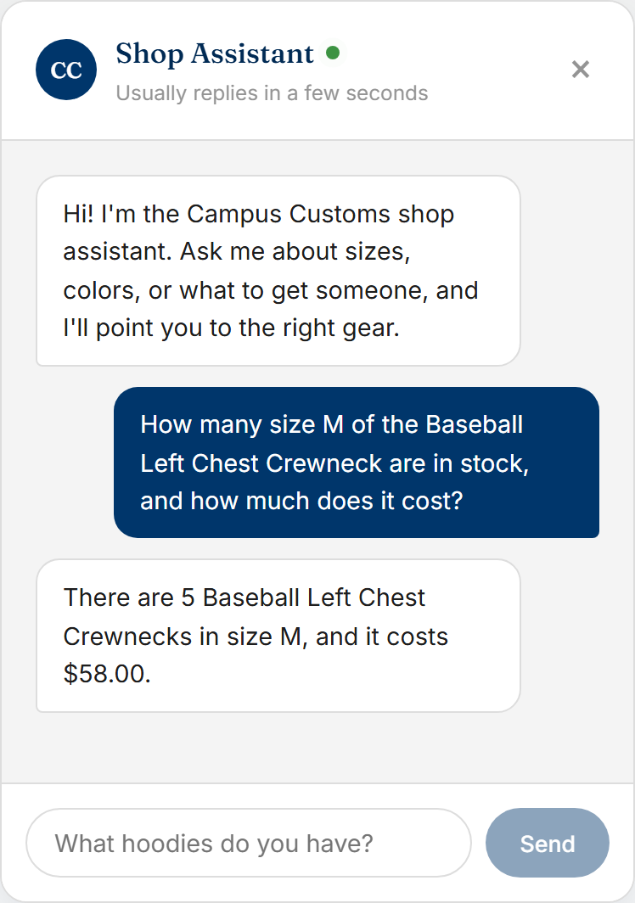
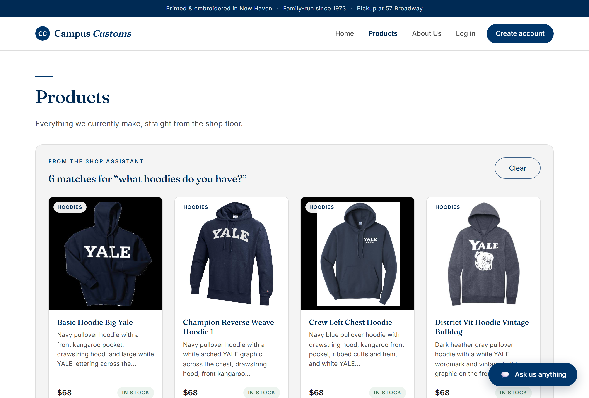
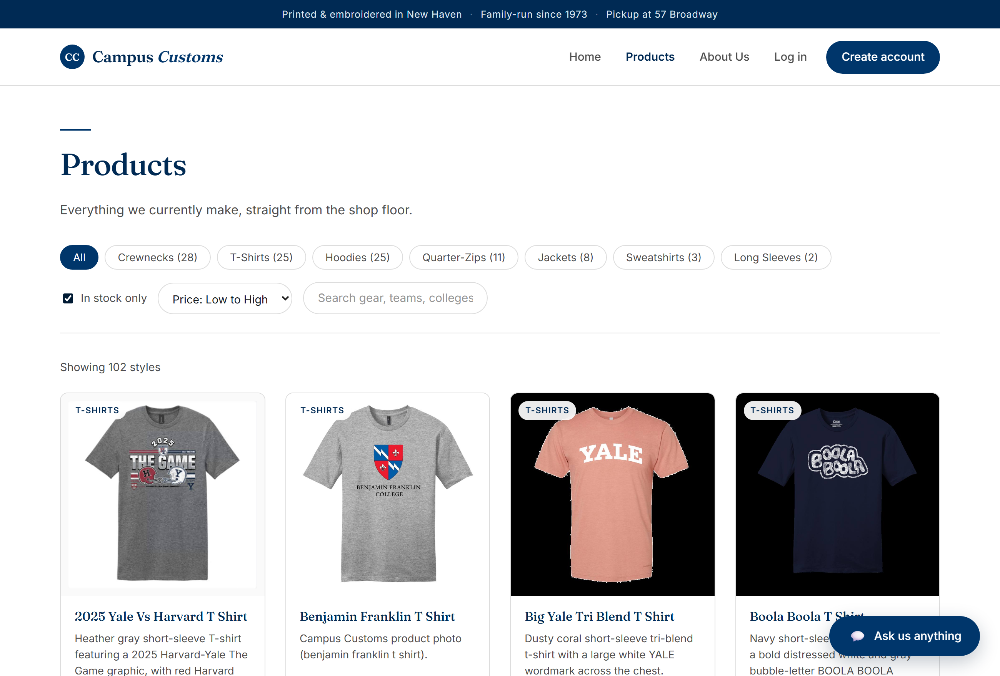

1Chat checks real inventory and price

Asked how many of the Baseball Left Chest Crewneck are in stock in size M and the price, the assistant answers "5 in size M, $58.00." Both numbers come straight from the database (that product's M quantity is 5 and its price is $58), proving the agent reports honest stock and price rather than inventing them.
2A category question fills the page with product cards

Typing "what hoodies do you have?" in the chat sends the shopper to the Products page, where a "From the shop assistant" band shows the 6 matching hoodies as real cards (image, name, price, stock). This proves the agent's structured matches are rendered dynamically on the site, not just described in text.
3Usability feature: shopping filters (Problem 9)

On the Products page, "In stock only" is checked and the sort is set to "Price: Low to High", so the grid leads with the least expensive in-stock items. This proves the Problem 9 shopping filters work, letting budget shoppers narrow to what they can actually buy.